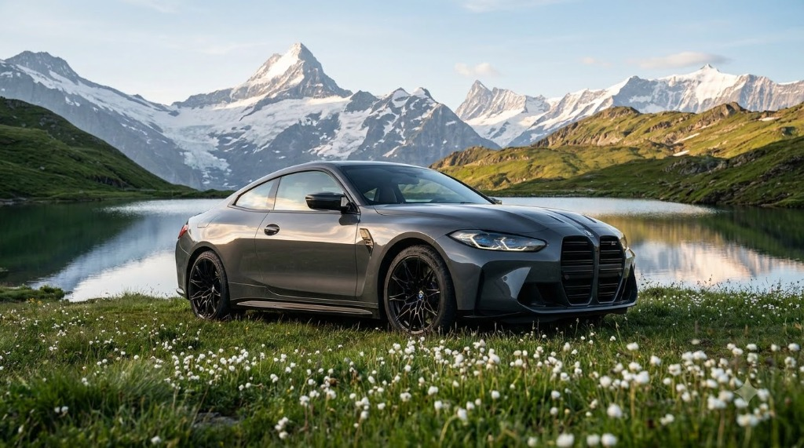
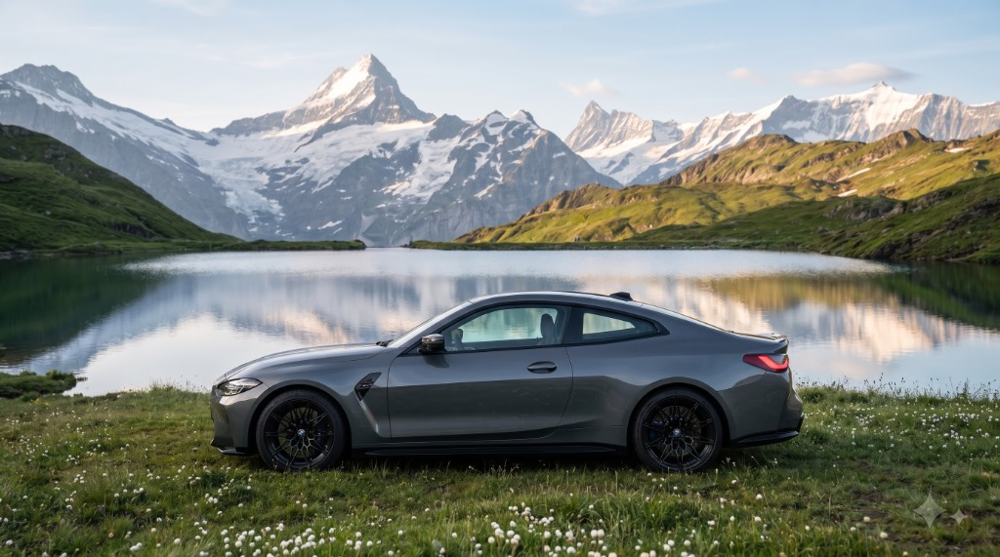
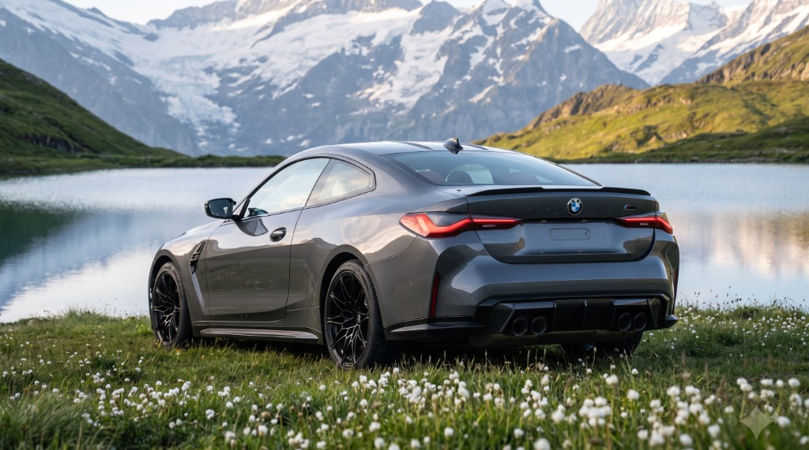

FORGED FOR THE MOUNTAIN PASS.
High above the treeline, where the air turns crisp and wildflowers carpet the lake shore, the M4 reveals its true character — a precision instrument carved for driver connection.
3.0L Twin-Power Turbo
Dual monoscroll turbochargers feeding a forged lightweight crankshaft designed to sustain 7,200 RPM redline assaults.


SCULPTED IN SILENCE, BUILT TO CARVE.
A long bonnet, sweeping roofline, and sculpted muscular flanks. The carbon-fiber reinforced plastic (CFRP) roof pulls center of gravity down to the asphalt.
Three Drive Modes, Zero Hesitation
Sensors calculate wheel movement and damper resistance thousands of times per second across switchbacks and high-speed sweepers.
THE SOUND THAT ECHOES ACROSS THE PEAKS.
Quad exhaust tips integrated into an aggressive rear carbon diffuser. Every throttle input is answered with an authentic, unmuted straight-six crescendo.
Active M Rear Differential
Seamlessly shifts 0–100% torque between rear wheels to eliminate understeer on tight hairpins.

SPECIFICATIONS & TELEMETRY
Verified technical figures for the 2026 BMW M4 Coupe family.
S58 3.0-Liter Twin-Turbo Inline-6 with forged internals.
Intelligent M xDrive all-wheel drive with pure RWD drift mode.
Flat, muscular torque curve that never runs out of breath.
Electronically limited to 155 mph in standard configuration.
Model Comparison
M4 Coupe
Pure analog rear-wheel drive engagement with rev-matching.
M4 Competition
Rear-wheel drive precision with 8-speed lightning shifts.
M4 Competition xDrive
Unstoppable all-weather traction with selectable 2WD mode.